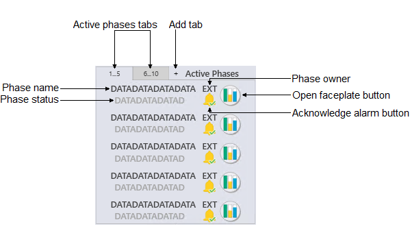

REUSE_Faceplate and Detail display components
FACEPLATE COMPONENTS
- Abnormal mode status icon
-
Icon Status Description Abnormal mode (Mode) Provides indication when Mode is not as expected. It is visible whenever either of the following is true:the Actual mode of the PID block is not equal to the Normal mode
the Actual mode of the PID block is not equal to the Target mode
- Accept check box
- Use this check box to toggle the ACCEPT_D parameter in the Device Control block. When Accept is checked, the actual state (PV_D) is set to the output state (OUT_D), regardless of the discrete input states that determine FV_D.
- Acknowledged Alarms Average
- Shows, for the prior month, the average number of acknowledged alarms in the active alarm list for this workstation.
- Active Alarms Average
- Shows, for the prior month, the average number of alarms in the active alarm list for this workstation.
- Active phases list
- Shows the active phases and unit phases.

- Active phases tabs
- Each tab shows from 1-5 active phases.
- Add tab button
- If you want to see more than 10 active phases, click this button to add another tab.
- Phase name
- Shows the name of the active phase.
- Phase status
- Shows the current status for the active phase.
- Phase owner
- Indicates the control mode (DeltaV Batch or External) for the current phase, which is based on the OWNER parameter. When the batch is running External, the user controls the phase.
- Phase alarm button
- Acknowledges the alarm for the active phase.
- Adaptive control state
- Indicates that an Adapt license has been assigned to the block, and the Actual Adapt mode or Target Adapt mode is not Off.
- Alarm icon
- Shows the highest priority alarm for that module. The following
table shows the alarm icon for each alarm priority and state.
Active acknowledged Active unacknowledged Inactive unacknowledged Suppressed Critical alarm 


Warning alarm 


Advisory alarm 

 Note: The suppressed alarm icon is visible only when no other active or unacknowledged alarms exist.
Note: The suppressed alarm icon is visible only when no other active or unacknowledged alarms exist. - Alarm list (active)
-
Provides a condensed version of an alarm summary and scrollable list of the module's current active alarms.
- Ack column --> Shows the state of the alarm, which is represented by one of the following symbols:
Alarm state Ack column Active/unacked Empty field Active/acked Check mark Inactive/unacked Empty box - Param column --> Shows the alarm name or parameter. The text and colors are as configured for the alarm's current state.
- Help column --> Indicates the type of Alarm Help available for the corresponding alarm. The column contains one of the following icons:
Note: The alarm list on the Continuous Unit Module faceplate (UMC_fp) provides a full alarm summary rather than a modified one. - Alarm list (suppressed)
- Provides a condensed version of an alarm summary and scrollable
list of the module's current suppressed alarms.
- Alarm --> Shows the name of the suppressed alarm.
- Time in --> Shows the time the alarm was suppressed.
- Help column --> Iindicates the type of Alarm Help available for the corresponding alarm. (See a description of these icons in the active alarm list description.)
- Alarm management
-
- Priority
- Shows the priority, such as Warning, Critical or Advisory, that is assigned to the corresponding alarm. Use the drop-down arrow to change the priority for that alarm while online.
- Priority Adj
- Use the drop-down arrow to decrease the alarm priority while online. If a module has more than one alarm configured, the alarm priorities are all reduced by the same value, except that the lowest priority that will be set is 3, a logged event. (For example, if a module has three alarms, configured with alarm priorities of 12, 8, and 5, and a priority adjustment of 5 is made, the online alarm priorities will be set to 7, 3, and 3, respectively.) The configurable alarm priority held in the PRI field of each alarm parameter remains unchanged. Therefore, setting the priority adjustment back to 0 reestablishes the original priority levels. (In the above example, the priorities are reestablished to 12, 8, and 5). Refer to the topic "The ALARMS parameter" for more information on the ALARMS parameter and to the and the "System alarm management" section for more information on alarm priorities.
- Enab check box (Enable)
- Indicates the corresponding alarm's ENAB (enabled) state. This checkbox is a read-only indication.
- OOS check box (Out of Service)
- Select this check box to remove the corresponding alarm from service.
- Shlv check box(Shelve)
- Select this check box to shelve the corresponding alarm.
- Help icon
- This icon indicates the type of Alarm Help available for the corresponding alarm. One of the following icons is visible on the faceplate:
- Alarm reset button
- Resets all alarms to their original configuration (alarms that were suppressed are unsuppressed).
- Alarm state value (Limits)
- Shows the discrete state value (1 or 0) for which a discrete alarm is generated. Click this field to enter a value (from 0 through 255). Any value greater than 1 prevents an alarm condition from occurring.
- Alarm suppression state
- Batch ID
- Shows the Batch ID for the current phase.
- Batch information
- Shows the Batch ID, operation, unit procedure, and procedure.
- Bypass/Normal toggle
- This control provides a means to place the PID block in Bypass mode and return it to Normal mode. Bypass mode makes the output value equal to the percent of SP value, which allows the master loop to drive the output if the transmitter is unavailable. Click Bypass to place the PID block in Bypass mode, or click Normal to turn off the Bypass mode.
- Bypassed status icon
-
Icon Status Description 
Bypassed Visible when the module level BYPASSED parameter is True. Interlock bypassed applies only to DC or EDC blocks. Tracking condition bypassed applies to all other function blocks - Compensated Flow
- Shows the compensated flow of the gas or liquid stream.
- Condition columns
-
- First-out
- A red arrow indicates that this condition was the first condition that evaluated to True.
- Condition
- Shows the configured description for the condition. When the condition is inactive, the description text is shown as light gray.
- Delay On
- Shows the time configured to delay the output of the condition when it evaluates to True.
- Delay Off
- Shows the time configured to delay the output of the condition when it evaluates to False.
- Timer
- Shows the Delay On or Delay Off time remaining after a condition's state changes.
- Value
- Shows the track value configured for the condition.
- Bypass
- A check mark indicates that the condition has been bypassed.
- Reset Required
- A check mark indicates that a reset is necessary to unlatch the condition after the condition's expression evaluates to False. This check box is read-only.
- Hold in Manual
- A check mark indicates that the downstream PID block is set to Manual mode when the condition's output is latched.
- State
- Shows the state to interlock to when the condition is True.
- Condition reset button
- This button is visible only when a condition requiring a reset becomes inactive.
- Conditional alarm button
- Click this button to open a popup where you can change the values of the conditional alarming parameters. This button is visible only when conditional alarming is enabled.
- Current value (Reading)
- Shows the module's value of OUT_D.
- Delay timer
- Shows the module's DELAY_TIMER value.
- Detail display button
- Open the module detail display.
- Device ID
- Shows the ID for the device.
- Device state
- Shows the current state of the DC_STATE parameter in the Device Control block. When the device state is Locked, a reset button appears on the faceplate. Use the reset button to reset the device state.
- Device state reset button
- Resets the device state. This button is visible only when the device state is Locked.
- Diagnostics table
- Shows any active conditions in the module's MERROR, MSTATUS, and BLOCK_ERR parameters. Each parameter has its own tab, and the parameter name is underlined on the tab when an active condition exists for that parameter. Click the parameter's tab to see its active conditions. When an error has occurred in the module, a Clear Error button appears on the MERROR tab. Click this button to clear all active errors.
- ERAMP type
- Indicates how the ERAMP_TYPE parameter of the ramp is configured:
- Time check box
- Select this check box to configure the ramp with the Use Time parameter option.
- Rate check box
- Select this check box to configure the ramp with the Use Rate parameter option.
- Faceplate button
- Opens the module faceplate display.
- Fail alarm
- Shows the current state of the FAIL parameter in the Device Control block. When the device state is Locked, a reset button appears on the faceplate. Use the reset button to reset the fail alarm state.
- Fail alarm reset button
- Resets the fail alarm state. This button is visible only when the device state is Locked.
- Fail condition
- Shows the current state of the FAIL parameter in the Device Control block.
- Failure State
- Shows the current state of the FAILURE_STATE parameter in the Enhanced Device Control block. If no FAILURE_STATE is present, but the PREV_FAIL_STATE parameter still shows the last failure that occurred, this field shows the PREV_FAIL_STATE value along with an option to reset the previous fail state to Clear.
- First-out alarm
- Shows first-out alarm.
- Flow
- Shows the measured flow of the gas or liquid stream.
- Function block information
-
- Zone name
- If the faceplate or detail display contains an object in another zone, the zone name appears here.
- Tag
- The DeltaV database tag for the module function block associated with the faceplate or detail display.
- HOA
- HAND/OFF/AUTO
- Icon buttons
- Interlocked status icon
-
Icon Status Description 
Interlocked (Interlock condition) Visible when either of the following is true:The DC block's DC_STATE parameter is Shutdown/Interlock
The EDC block's OPERATION_STATE parameter is Shutdown/Interlock
- Limits
- Shows the limits for module alarms, which include the following
values:
- Hi Hi Lim
- Shows the maximum value of the PV (in engineering units) before the High High Limit active bit (HI_HI_ACT) is set. Click this field to enter a new limit.
- Hi Lim
- Shows the maximum value of the PV (in engineering units) before the High Limit active bit (HI_ACT) is set. Click this field to enter a new limit.
- Lo Lim
- Shows the minimum value of the PV (in engineering units) before the Low Limit active bit (LO_ACT) is set. Click this field to enter a new limit.
- Lo Lo Lim
- Shows the minimum value of the PV (in engineering units) before the Low Limit active bit (LO_ACT) is set. Click this field to enter a new limit.
- Alm Hysteresis
- Shows the alarm hysteresis (or deadband) value for the alarm conditions in % of OUT scale. Click this field to enter a new value. An alarm condition does not recur until the PV has backed away from the corresponding limit by at least the % of OUT Scale specified by this value.
- Low Cutoff
- Activated when the Low Cutoff I/O option is enabled. When the converted measurement is below the LOW_CUT value, it is shown in the PV as 0.0.
- Limits
-
- Compensation Hi Lim
- Shows the compensation high limit.
- Compensation Factor
- Shows the compensation factor, which is the actual ratio of the compensated flow to the measured flow.
- Compensation Lo Lim
- Shows the compensation low limit.
- Linearization
- Shows the linearization type for the AI. The possible types are DIRECT, INDIRECT, IND SQR ROOT, or DIRECT INDEP.
- Logic enable/disable
- If logic is configured to arm or disarm the module under certain conditions, click this button to enable or disable the logic.
- Mini faceplate button
- Opens a smaller version of a main faceplate. The mini faceplate shows only the module's critical values.
- Mode
- Module information
- Shows the following information about the module:
- Zone name
- If the faceplate or detail display contains an object in another zone, the zone name appears here.
- Tag
- The DeltaV database tag for the module/device/node associated with the faceplate or detail display.
- Description
- The user-configured description for the object. Descriptions do not appear on function blocks faceplates and detail displays.
- Load phase button
- Creates or starts a new phase in the unit module.
- No Permit status icon
-
Icon Status Description 
No Permit (Permissive condition) Visible when any of the following is true: For a DC block:DEVICE_OPTS parameter is set to Permissive
DC_STATE is set to Confirmed Passive
There is no permit
For an EDC block:Only the Device Option for Permissive is true, EDC block is in the passive state, and there is no permit
The Device Option for Permissive to Any State is true, and there is no permit
- Node Name
- Shows the name of the operator workstation for which the alarm statistics are computed.
- Operator selection inputs
- A list of up to 16 control signals as input.
- Operation State
- Shows the current state of the OPERATION_STATE parameter in the Enhanced Device Control block. When the state is Locked, a reset button appears on the faceplate. Use the reset button to reset the operation state.
- Operator Selection
- Select the input to use for the control signal (Auto Selection or SEL_1, SEL_2, ... , SEL_16). The selected input appears in the Selection Input field. The selection type appears in the Selection Type field.
- Operator Selection inputs
- Shows a list of up to 16 control signals that can be used as the Operator Selection input.
- OUT
- Shows the loop module's OUT value and engineering units. The text color is based on the OUT status (green when the PV status is good and a shade of red when the status is uncertain or bad).
- OUT bar graph
-
- OUT bar
- Indicates the value of the OUT parameter, which is the same as the value shown in the OUT value field.
- OUT scale EU0 and EU100
- Shows the values that correspond to 0% and 100% of the OUT_SCALE parameter.
- OUT scale lines
- Shows the major and minor divisions for the scale.
- OUT LO and HI limits
- Shows the warning limits for OUT.
Note: The LOOPM_fp shows the value of the MNPLT1 parameter, and its scale is defined by the MNPLT1_SCALE parameter. - OUT slew
- Provides a means to manually modify the output value. Click the slew arrows to increase or decrease the output by increments of 1 engineering unit, or enter a value in the OUT value field.
- OUT slider
- Use the OUT slider to modify the OUT value by dragging the slider to the desired point on the scale. The new value is then written to the module's OUT parameter.
- Phase alarm button
- Acknowledges the alarm for the active phase.
- Phase command
- Shows the current phase command.
- Phase command button
- Opens a list of Batch commands.
- Phase owner
- Indicates the control mode (DeltaV Batch or External) for the current phase, which is based on the OWNER parameter. When the batch is running External, the user controls the phase.
- Phase owner toggle
- Click to change the phase owner.
- Phase status
- Shows the current status for the phase, along with the following
information:
- Phase state
- Shows the current state of the phase.
- Time in State
- Shows the time elapsed since the current state began.
- Step Index
- Shows, as a number, the current step of the phase.
- Watchdog State
- Shows the current state of the watchdog.
- Pressure
- Shows the measured pressure of the gas stream. The visibility of this field is based on the configured compensation type (COMP).
- PV
- Shows the module's PV value and the PV engineering units. The text color is based on the PV status (blue when the PV status is good and a shade of red when the status is uncertain or bad).
- PV bar graph
-
Presents PID, AI, or ALM information graphically, relative to the defined EU0 and EU100.

- PV bar
- Graphically indicates the PV value.
- PV scale EU0 and EU100
- Shows the values that correspond to 0% and 100% of scale, respectively, for the PV.
- PV scale lines
- Shows the major and minor divisions for the scale.
- PV alarm limits
- Indicates the HI HI, HI, LO, and LO LO alarm limits for the PV. Alarm limits can be modified using the module's detail display.
- PV Value (Feedback)
- Shows the module's VAL_FDBK value.
- Ramp End Value
- Shows the value configured for the ERAMP_END_VALUE parameter of the ramp.
- Ramp in Mode
- Shows the mode of the ramp (AUTO, LO, MAN, RCAS, or ROUT).
- Ramp Status
- Shows the state of the ramp (Complete, Enabled, Paused, Ramping, or Stopped).
- Ramp status icon
- Indicates the current state of the ramp, as indicated in the
following table:
Icon Ramp state 
Ramping - The ERAMP_ACTIVE parameter value is 1 (True) and the ERAMP_STATE parameter is set to Ramping. 
Paused - The PAUSE parameter is set to 1 (True) when the ramp is active or the ERAMP_STATE parameter is set to Paused when the Pause if mode changes option is enabled and the current target block mode does not match the ERAMP_IN_MODE parameter. None The ramp is not in the Ramping or Paused state. - Ramp Time
- Indicates the time period for the output to ramp from its initial value to its ramp end point input value.
- Ramp Unit (selector)
- Select the time unit to use for the ramp time (seconds, minutes, hours, or days).
- Referenced Mode
- Shows the mode of the target function block with which the Enhanced Ramp function block is associated.
- Rerun Current Sequence Group button
- Refreshes the state information for the sequence group currently executing.
- Restart Current Command button
- Aborts the command currently executing, and then restarts a new instance of the command.
- Run button
- Starts the currently selected command.
- Run command
- Shows the command selected to run.
- Selection Input
- Shows the input selected in Operator Selection.
- Selection Type
- Shows the input type selected in
Operator Selection.
- If Operator Selection is SEL_1, SEL_2, ... , SEL_16, shows Operator Selected.
- If Operator Selection is Auto Selection, shows Low, Middle, or High.
- Shelved Alarms Average
- Shows, for the prior month, the average number of alarms in the suppressed alarm list for this workstation.
- Simulate
-
- Simulate enable
- Select this check box to enable the simulate value to be used as the PV input for the discrete input (DI).
- Simulate value
- Enter the value to be used as the Boolean form of the PV input when simulate is enabled.
- Field Value
- Shows the raw field value. To scale this value, use the Out scale to calculate the PV value when simulate is disabled.
- Simulate Active status icon
-
Icon Status Description 
Simulate Active Visible per the Simulation Active condition in the module's BLOCK_ERR parameter. The Simulation Active icon is never visible if either the Not Running or Bad IO icon is visible. - SP slew
- Provides a means to manually modify the setpoint value. Click the
slew arrows to increase or decrease the setpoint. The increments by which the
setpoint changes with each mouse click are determined by the following:
- If CNTRL1_SCALE.F_DECPT is less than or equal to 1, each click changes the setpoint by 1 CNTRL1 engineering unit.
- If CNTRL1_SCALE.F_DECPT is greater than or equal to 2, each click changes the setpoint by 0.1 engineering unit.
- SP slider
- Use the setpoint slider to modify the setpoint value by dragging
the slider to the desired point on the scale. The new value is then written to
the module's SP parameter.
Another arrowhead (not shown in this image), with the same size and movement range as the Setpoint slider, indicates the Working Setpoint (SP_WRK) of the loop. This arrow's movement range is restricted within the setpoint limits and is the actual SP used by the controller to calculate output moves. When SP and SP_WRK have the same value, SP_WRK is superimposed upon SP and, therefore, is not distinguishable from SP. The Working Setpoint is visible as a separate entity when setpoint ramping prevents SP_WRK from going to SP immediately.
- SP Value (Commanded)
- Shows the module's VAL_CMD value.
- Pause Ramp
- Pauses the ramp.
- Start Ramp
- Starts the ramp.
- State Alarms Average
- Shows, for the prior month, the average number of alarms in the active alarm list for this workstation, and that have been active for over 24 hours.
- State buttons
- Depending on the type of discrete device being controlled, a faceplate provides either two or three state buttons, each labeled with a text description of its corresponding state. Click one of these buttons to set the target state (SP_D of the Device Control block) to the state described on the button (when the state is permitted).
- State information
- Shows the state information for the sequence group currently
executing. The state information includes the following values:
- State
- The current status of the current command.
- Time
- The number of seconds the current command block has been running.
- Error
- Shows 1 if the command generated an error or timed out.
- Max Time Expired
- Shows 1 if CFM_MAX_TIME has been exceeded; otherwise, shows 0.
- Min Time Expired
- Shows 1 if CFM_MIN_TIME has been exceeded; otherwise, shows 0.
- Current Sequence
- Applies only when using the faceplate for state-driven algorithms.
- State transition timer
-
- Time Limit
- Shows the confirm time for the current setpoint of the Device Control block (for example, CFM_PASS_TIME when SP_D is passive).
- Elapsed Time
- Shows the transition timer that begins to increment when the outputs are driven as a result of a change in SP_D.
- Stop Ramp
- Stops the ramp.
- Status icons
- Supervisor/Operator privileges
- The Supervisor field indicates that the supervisor has privileges to arm or disarm the module. The Operator field indicates that the operator has privileges to arm or disarm the module.
- Temperature
- Shows the measured temperature of the gas or liquid stream. The visibility of this field is based on the configured compensation type (COMP).
- Time Remaining
- Shows the time remaining, along with the time units, until the maximum suppression times out.
- Time Remaining
- Shows the time remaining until ramp calculation concludes.
- Tracking status icon
-
Icon Status Description Tracking Visible when both of the following are true:TRK_IN_D is True
Track Enable is selected in CONTROL_OPTS
- Trend chart
- Provides a condensed version of a trend chart.
- Tuning
- Tuning
- The following values are visible when the fluid type is gas:
- Absolute Pressure CF
- Absolute Temp CF
- Calibration Pressure
- Calibration Temp
- Tuning
- The following values are visible when the fluid type is liquid:
- Calibration Density
- Dens-Temp Slope
- Dens-Temp Intercept
- Type selectors
-
- Fluid Type
- Select whether the fluid being measured is liquid or gas.
- Compensation Type
- Select the type of compensation to be measured (Pressure, Temperature, or Pres-Temp).
- Flow Meter Type
- Select the type of flow to be measured (Diff Press or Mass Flow).
- Unit faceplate button
- Opens the faceplate for the unit module.
- Unit name
- Shows the unit name.
- Unload phase button
- Unloads the phase when it is IDLE.
- Advanced function block faceplate - Trip and Pre-trip tabs
-
- Current votes to pre-trip
- Shows the current number of pre-trip votes. (Based on PRE_VOTES.)
- Current votes to trip
- Shows the current number of trip votes. (Based on TRIP_VOTES.)
- Normal delay time
- The configured time that a vote to trip must remain clear before the output changes to the normal state. (Based on NORMAL_DELAY.)
- Pre-trip status
- Shows the state of the vote to pre-trip. (Based on PRE_TRIP_STATUS.) When PRE_TRIP_STATUS is Delayed, a PRE_DELAY_TIMER value field appears.
- Pre-trip limit
- Shows the value of DETECT_TYPE (Greater than or Less than), the pre-trip limit (PRE_TRIP_LIM), and the INSCALE units. The pre-trip limit is compared to the input value to determine a pre-tripped condition.
- Trip delay time
- The configured time that a vote to trip must remain a vote to trip before the output changes to tripped. (Based on TRIP_DELAY.)
- Trip hysteresis
- Shows the deadband, in percent of IN_SCALE, applied to the trip limit for resetting a vote to trip or vote to pre-trip.
- Trip limit
- Shows the value of DETECT_TYPE (Greater than or Less than), the trip limit value (TRIP_LIM), and the INSCALE units. The trip limit value is compared to the input value to determine whether an input is a vote to trip the output.
- Trip status
- Shows the state of the vote to trip. (Based on TRIP_STATUS.) When TRIP_STATUS is Delayed, a DELAY_TIMER value field appears.
- Votes required to pre-trip
- Shows the number of votes required to trip the output. (Based on A_NUM_TO_TRIP.)
- Votes required to trip
- Shows the number of votes required to trip the output. (Based on A_NUM_TO_TRIP.)
- Advanced function block faceplate - Bypass tab
-
- Allowed bypass time
- Shows the duration of time a maintenance bypass can be active. (Based on BYPASS_TIMEOUT.)
- Bypass timer
- Shows the value of BYPASS_TIMER.
- Reminder time
- Shows the value of REMINDER_TIME, which reminds operators that a bypass timeout is imminent.
- Bypass messages
- On a running display, a message may appear on the Bypass
tab. The visible message depends on the current bypass conditions. The
following table shows the possible messages and under what condition each
appears.
Message Bypass condition An input is bypassed The Bypass bit is set in AVTR_ALERTS. A bypassed input exceeds the pre-trip limit The "bypassed pre-trip" bit is set in AVTR_ALERTS. A bypassed input exceeds the trip limit The "bypassed trip" bit is set in AVTR_ALERTS. Trip inhibited - votes required exceed votable inputs Trips are inhibited per TRIP_STATUS and the startup bypass is not active. Bypasses are not permitted at this time BYPASS_PERMIT and the bypass option, Bypass permit is not required for maintenance bypass, are both False. - Bypass messages
- On a running display, a message may appear on the Bypass
tab. The visible message depends on the current bypass conditions. The
following table shows the possible messages and under what condition each
appears.
Message Bypass condition An input is bypassed The Bypass bit is set in DVTR_ALERTS. A bypassed input is in the trip state The "bypassed trip" bit is set in DVTR_ALERTS. Trip inhibited - votes required exceed votable inputs Trips are inhibited per TRIP_STATUS and the startup bypass is not active. Bypasses are not permitted at this time BYPASS_PERMIT and the bypass option, Bypass permit is not required for maintenance bypass, are both False. - Allow/Disallow Bypass button
- The Allow Bypass button is visible when BYPASS_PERMIT is False and the bypass option, Bypass permit control should be visible in runtime interface, is True. Click the button to set BYPASS_PERMIT to True.
- Advanced function block faceplate - Startup tab
-
- Startup time
- Shows the value of STARTUP_TIME. This field is visible when the startup override is configured as time-based.
- Startup timer
- Shows the value of STARTUP_TIMER. This field is visible when the startup override is configured as time-based and is active. When visible, this field allows a write to STARTUP_TIMER.
- Stabilization time
- Shows the value of STABLE_TIME. This field is visible when the startup override is configured as time-based and configured to expire on stabilization.
- Time to stable (last)
- Shows the value of TIME_TO_STABLE. This field is visible when the startup override is configured to be time-based and to expire on stabilization.
- Stabilization timer
- Shows the value of STABLE_TIMER. This field is visible when the startup override is configured to be time-based, to expire on stabilization, and the startup override is active.
- Reminder time
- Shows the value of REMINDER_TIME. This field is visible when the startup override is configured as time-based and the reminder is configured to apply to startup bypasses.
- Startup messages
- On a running display, a message may appear on the Startup
tab. The visible message depends on the current startup override conditions.
The following table shows the possible messages and under what condition each
appears.
Message Startup override condition Trip inhibited - startup active The startup override is active Waiting for startup reset event The startup override is active and the startup bypass duration is configured as event-based
- Advanced function block faceplate - Alert tab
-
- Alert messages
- On a running display, a message may appear on the Alert
tab. The visible message depends on which bits are set in AVTR_ALERTS. The
following table shows the possible messages and under what condition each
appears.
Message Alert condition TRIPPED The Trip bit is set PRE-TRIPPED The Pre-Trip bit is set An input is bypassed The Bypass bit is set Startup is active The Startup bit is set High/Low deviation limit exceeded The Deviation bit is set Reminder is active The Reminder bit is set An input has Bad status The "bad input" bit is set A bypassed input exceeds the pre-trip limit The "bypassed pre-trip" bit is set A bypassed input exceeds the trip limit The "bypassed trip" bit is set - Alert messages
- On a running display, a message may appear on the Alert
tab. The visible message depends on which bits are set in AVTR_ALERTS. The
following table shows the possible messages and under what condition each
appears.
Message Alert condition TRIPPED The Trip bit is set An input is bypassed The Bypass bit is set Startup is active The Startup bit is set A bypassed input is in the trip state The "bypassed trip" bit is set Reminder is active The Reminder bit is set An input has Bad status The "bad input" bit is set
- Advanced function block faceplate - Misc tab
-
- Deviation Limit
- Shows the value of DEV_LIM. This field is visible when the online–only parameter, NOF_INPUTS, is greater than 1 (visible unless this is a 1oo1 voter).
- Deviation Hysteresis
- Shows the value of DEV_HYS. This field is visible when the online–only parameter, NOF_INPUTS, is greater than 1.
- Advanced function block faceplate - CEM_fp
-
- Effect description
- Shows the description of the effect (value of DESC_EFFECT).
- Effect state
- Shows the state of the Effect (value of STATE).
- First Out indicator
- When the value of FIRST_OUTx is non-zero, a red arrow appears to the left of each cause that was active when the trip was initiated. The arrows remain visible until the block clears FIRST_OUTx. Typically, only one arrow is visible.
- CAUSEy value
- Shows a numerical value for CAUSEy, where 1=normal and 0=trip demand.
- Shows the associated causes for this effect (the value of DESC_CAUSEy). The faceplate can show up to 16 causes.
- State reset button
- When STATEx is "Ready to Reset," a Reset appears to the right of the text. Click the Reset button to reset RESETx.
- Current override
- Shows the value of OVERRIDESx.
- Remove Force button
- This button appears when OVERRIDESx is "Forced to Trip" or "Forced to Normal." Click this button to set FORCE_EFFECTx to "Do not Force."
- Force Trip button
- This button appears when OVERRIDESx is "None" or "All Associated Causes Masked," and when FORCE_PERMIT is True or a force permit is not required (FORCE_OPTS.PermitNotReq=True). Click this button to set FORCE_EFFECTx to "Force Trip."
- Force Normal button
- This button appears when OVERRIDESx is "None" or "All Associated Causes Masked," and when FORCE_PERMIT is True or a force permit is not required (FORCE_OPTS.PermitNotReq=True). Click this button to set FORCE_EFFECTx to "Force Normal."
- Allow Forces button
- Appears when FORCE_PERMIT is False and the force permit control should be visible (FORCE_OPTS.ForcePermitVisibleInHMI=True). Click this button to set FORCE_PERMIT to True.
- Disallow Forces button
- Appears when FORCE_PERMIT is True and the force permit control should be visible (FORCE_OPTS.ForcePermitVisibleInHMI=True). Click this button to set FORCE_PERMIT to False.
- LATENT_TRIP indicator
- Indicates that removing the force permit will result in a trip; that is, an effect that has one or more active causes is being forced to Normal. This indicator appears when LATENT_TRIP is True and the force permit control should be visible (FORCE_OPTS.ForcePermitVisibleInHMI=True).
- Advanced function block faceplate - SEQ_fp, STD_fp
-
- Current State
- Shows the current state of the function block.
- Outputs
- Shows text descriptions for outputs (values of DESC_OUTx parameters). The text color is based on the value of OUT_Dx.
- Transition Condition
- Shows text descriptions (based on DESC_INx) for those inputs currently being evaluated by the block.
- Transition State
- Indicates the state to which the block will transition if that input becomes True.


DETAIL DISPLAY COMPONENTS